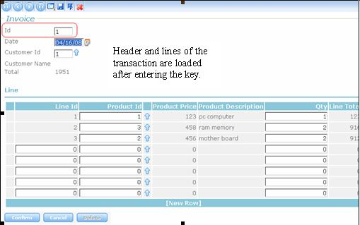

No more flickering! Better performance.. When a user event is executed on the web server, it is always executed using Ajax. It's done through POST, not through submit, so all the information is sent to the server (or the necessary information in some cases), with only the necessary information returning to the client. That is to say, the response sent to the client does not bring redundant information. Example 1: Form Validation If the web form has the Customer Code in the Invoice Transaction, and three inferred fields: Customer Name, Customer Address, Customer Telephone, all these fields will be sent to the client machine in a single roundtrip to the server. In the invoice transaction (header and lines), when the user enters the invoice code, the following happens: A. The transaction mode is inferred when exiting the code field.
 Example 2: Web Components Refresh Suppose you have a web form with two or more web components on it (one of them is the "login" web component). When the final user logs in, and confirms (presses the login button), there is no general flickering effect, only in the login web component.
|
| Backlinks |
| Grids in Web Transactions |